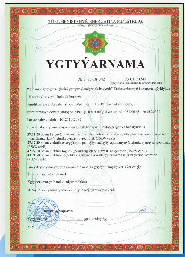
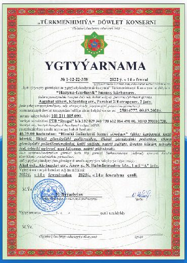
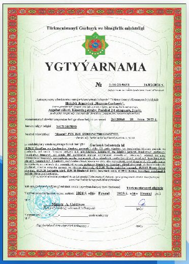

On-time delivery
Every facility is handed over to the state commission on the agreed schedule.
A Turkmen construction company since 2009: buildings, power, water supply and trade.
Our story
Hazyna Gurluşyk Economic Society was opened on 14 September 2009 in Ashgabat. From the moment of its establishment, the company has worked under the National Program to transform the social and living conditions of the population of villages, towns, cities, districts and district centers.
The company’s core profile is the construction of 35/10 kV electrical substations, overhead and cable power lines, internal and external water pipelines, pumping stations, buildings and roads — all delivered to the state commission at a high standard of quality.
The enterprise operates on the principles of economic accounting, self-management and self-financing, with its own assets and financial reporting. The company is led by director Ya. Shukurov.

Our goal is to achieve economic excellence and create new employment opportunities for the citizens of Turkmenistan.
Our advantages
Every facility is handed over to the state commission on the agreed schedule.
Valid licenses from the Ministry of Energy, the Ministry of Construction and the Türkmenhimiýa State Concern.
Architects, engineers, planners and technicians collaborate seamlessly on every project.
Documents
State permits (ygtyýarnama) for our key fields of activity.



Partnership
Our close collaboration with Sinopec, a leading international company in the oil and gas industry, provides us valuable experience for participation in the global market and for working to international standards.
A leading global oil & gas company — our partner in experience and standards.
27 facilities delivered to the state commission.